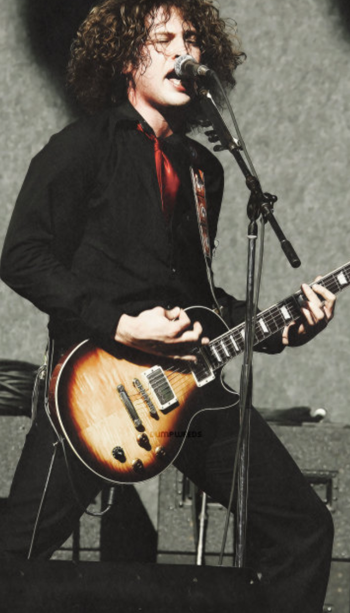

Ray Toro en 2002
2004

2006
Danger Days ("Jet-Star")


Biografía e información
Raymond Toro (Kearny, Nueva Jersey, 15 de julio de 1977) es un guitarrista, cantante y compositor estadounidense, conocido por ser el guitarrista principal de My Chemical Romance. Su hermano le presentó bandas con guitarristas que lo influenciaron mucho, y empezó a tomar clases de guitarra de chico. Su estilo se compara con el de Brian May, de Queen, a quien él mismo nombró como una de sus principales influencias. Es famoso por sus solos y arreglos en canciones de MCR como "Welcome to the Black Parade". En la época de *Danger Days* su personaje se llamaba Jet Star.
Cuando My Chemical Romance se separó en 2013, Ray se mantuvo casi por completo alejado del ojo público. Poco antes había sido padre por primera vez, y empezó a escribir música desde su casa. En mayo de 2013 publicó en su SoundCloud la canción "Isn't That Something", y dijo que la había tocado, cantado, grabado y mezclado todo él mismo. Durante los siguientes años trabajó en su primer álbum, que fue la primera vez que escribió letras y canciones por su cuenta.
*Remember the Laughter* es el primer y único álbum de estudio de Ray Toro hasta el momento. Lo publicó de manera independiente el 18 de noviembre de 2016 en su sello We're All A Little Crazy, después de grabarlo en su estudio casero entre 2013 y 2016. Ray produjo el disco y tocó casi todos los instrumentos: guitarras, bajo, batería, teclados y voz. Solo en algunas canciones lo acompañó Jarrod Alexander en la batería. El álbum es un "concepto liviano": cuenta la historia de un hombre que encuentra una caja de recuerdos que le trae a la mente amores y pérdidas del pasado. En realidad, habla de su vida de los últimos años y está lleno de referencias a su familia. Ray contó que "Walking in Circles" habla de su esposa y que la canción que da nombre al disco es una especie de caja de recuerdos para su hijo. A diferencia de los riffs de rock duro que lo hicieron famoso en MCR, el disco mezcla estilos y tiene varias piezas instrumentales cortas entre las canciones. Entre ellas se destacan "Take the World", "The Lucky Ones" y "We Save".
Además del álbum, Ray publicó "Isn't That Something" (2013) y "For the Lost and Brave" (2015), un tema que la revista Kerrang! describió como synth-rock con el espíritu de "nosotros contra el mundo" de MCR. También hizo un remix de "I Think You're Really Cool" junto a Guardin, en 2021.
En 2019, Ray grabó junto a Gerard dos covers para la serie de Netflix *The Umbrella Academy*: "Hazy Shade of Winter" (de Simon & Garfunkel) y "Happy Together" (de The Turtles).
Ray se encargó de la mezcla de *Barriers* (2019), el álbum de Frank Iero and the Future Violents. También participó en el segundo álbum de Electric Century, la banda de Mikey Way.
• Nació el 15 de julio de 1977, por lo que es el mayor de los cuatro integrantes de MCR después de Gerard.
• Es considerado el más reservado de los cuatro.
• Su solo en "Welcome to the Black Parade" es uno de los más recordados de la banda.
• Su primer sencillo solista lo grabó él solo, tocando todos los instrumentos.